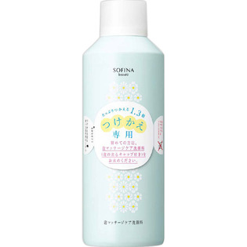

返回列表
产品名称：ソフィーナボーテ 泡マッサージケア洗顔料 つけかえ用

花王 ソフィーナボーテ 泡マッサージケア洗顔料 つけかえ用 ２３０ｇ
メーカー 花王
JANコード 4901301250582
商品の特徴
たっぷり使える１．３倍
- 成分・分量
- ＜成分＞
水、ベタイン、ココイルグルタミン酸Na、デシルグルコシド、二酸化炭素、イソペンタン、LPG、ショウガ根エキス、ユズ果皮エキス、ユーカリ葉エキス、グリセリン、ニコチン酸トコフェロール、ラウリン酸ポリグリセリル-10、カルボマー、（アクリレーツ／アクリル酸アルキル（C10-30））クロスポリマー、ヒドロキシエチルセルロース、BG、水酸化Na、エタノール、クエン酸、メチルパラベン、香料
- 用法及び用量
- ＜使用方法＞
1．顔が濡れてない状態でお使いください。
2．適量を手にとり、顔全体にひろげます。
3．小鼻・あご・額・ほおを、指の腹を使ってクルクルとらせんを描くようにマッサージします。
4．手を握り、第2関節を使って、ほおの下を軽く押します。
5．充分な量の水またはぬるま湯で、洗い残しがないようにしっかり洗い流します。
＜使用量の目安＞
ピンポン玉大くらい